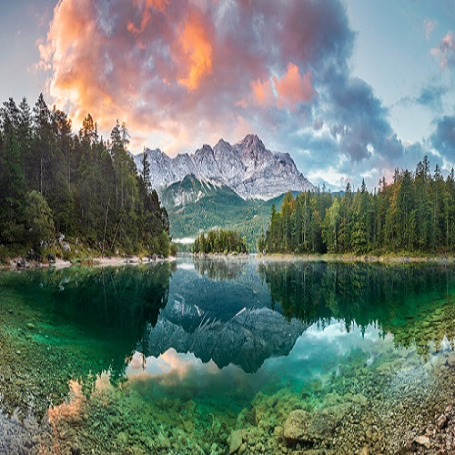

clip-path özelliği
absolute (mutlak/kesin) değeri ile konumlandırılmış bir Html elementinin gelişmiş kırpma/maskeleme özelliklerini
belirler.
değerler ;
- auto ; otamatik değer alır(varsayılan). Herhangi bir kırpma olmaz.
- shape ; şekil rect( ) fonksiyonu kullanır. (rectangle : dikdörtgen)
- inset ; ilave (1-üst, 2-sağ, 3-alt, 4-sol)
- circle ; daire (1-yarı çapı, at ,2-yatay pozisyon,3-dikey pozisyon)
- ellipse ; elips (1-yatay yarıçapı, 2-dikey yarıçapı, 3-yatay pozisyon, 4-dikey pozisyon)
- polygon ; poligon (serbest seçim aracı gibi çalışır) (part (yol)/ dolddurma kuralı),(yatay pozisyon / dikey
pozisyon)
Örnek-1 ;
clip-path: auto;
Merhaba Dünya
Örnek-2 ;
clip-path:inset(0px 25px 50px 30px );
1-üst, 2-sağ, 3-alt, 4-sol
Merhaba Dünya
Örnek-3;
clip-path:inset(0px 25px 50px 30px );
1-üst, 2-sağ, 3-alt, 4-sol

Örnek-4;
clip-path:circle(50% at 50% 50%);
1-yarı çapı, at ,2-yatay pozisyon,3-dikey pozisyon
Örnek-5;
clip-path:circle(25% at 0% 50%);
Örnek-6;
clip-path:circle(25% at 0% 0%);
Örnek-7;
clip-path:circle(25% at 75% 0%);
Örnek-8;
clip-path:circle(25% at 100% 0%);
Örnek-9;
clip-path:circle(100% at 100% 0%);
Örnek-10;
clip-path:circle(100% at 100% 50%);
Örnek-11;
clip-path:circle(50% at 100% 50%);
Örnek-12;
clip-path:ellipse(25% 50% at 50% 50%);
1-yatay yarıçapı, 2-dikey yarıçapı, 3-yatay pozisyon, 4-dikey pozisyon
Örnek-13;
clip-path:ellipse(25% 50% at 50% 50%);
Örnek-14;
clip-path:ellipse(25% 50% at 0% 50%);
Örnek-15;
clip-path:ellipse(25% 50% at 50% 0%);
Örnek-16;
clip-path:ellipse(50% 100% at 50% 100%);
Örnek-17;
clip-path:polygon(50% 0%,0% 100%,100% 100%);
(part (yol)/ dolddurma kuralı),(yatay pozisyon / dikey pozisyon)
Örnek-18;
clip-path:polygon(25% 0%,100% 0%,75% 100%,0% 100%);
Örnek-19;
clip-path:polygon(50% 0%,100% 50%,50% 100%,0% 50%);
Örnek-20;
clip-path:polygon(50% 0%,100% 38%,82% 100%,18% 100%,0% 38%
Örnek-21;
clip-path:polygon(30% 0%,70% 0%,100% 30%,100% 70%,70% 100%,30% 100%,0% 70%,0% 30%);
Örnek-22;
clip-path:polygon(20% 0%,80% 0%,100% 20%,100% 80%,80% 100%,20% 100%,0% 80%,0% 20%);
Örnek-23;
clip-path:polygon(0% 15%,15% 15%,15% 0%,85% 0%,85% 15%,100% 15%,100% 85%,85% 85%,85% 100%,15% 100%,15% 85%,0% 85%);
Örnek-24;
clip-path:polygon(40% 0%,40% 20%,100% 20%,100% 80%,40% 80%,40% 100%,0% 50%);
Örnek-25;
clip-path:polygon(0% 20%,60% 20%,60% 0%,100% 50%,60% 100%,60% 80%,0% 80%);
Örnek-26;
clip-path:polygon(25% 0%,100% 1%,100% 100%,25% 100%,0% 50%);
Örnek-27;
clip-path:polygon(0% 0%,75% 0%,100% 50%,75% 100%,0% 100%);
Örnek-28;
clip-path:polygon(100% 0%,75% 50%,100% 100%,25% 100%,0% 50%,25% 0%);
Örnek-29;
clip-path:polygon(75% 0%,100% 50%,75% 100%,0% 100%,25% 50%,0% 0%);
Örnek-30;
clip-path:polygon(50% 0%,61% 35%,98% 35%,68% 57%,79% 91%,50% 70%,21% 91%,32% 57%,2% 35%,39% 35%);
Örnek-31;
clip-path:polygon(0% 0%,100% 0%,100% 75%,75% 75%,75% 100%,50% 75%,0% 75%);
Örnek-32;
clip-path:polygon(20% 0%,0% 20%,30% 50%,0% 80%,20% 100%,50% 70%,80% 100%,100% 80%,70% 50%,100% 20%,80% 0%,50% 30%);
Örnek-33;
clip-path:polygon(0% 0%,0% 100%,25% 100%,25% 25%,75% 25%,75% 75%,25% 75%,25% 100%,100% 100%,100% 0%);